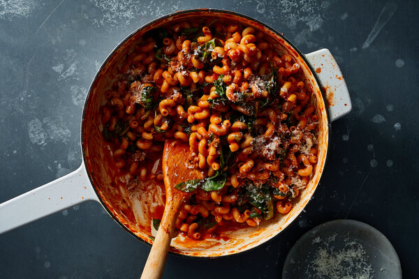

One Pot Pasta With Sausage and Spinach

Description
This is the one-pot recipe to make when chopping an onion feels like too much work. Cooking the pasta in a combination of passata (puréed raw tomatoes) and water seasoned with cumin and red-pepper flakes infuses it with flavor all the way through. Cumin adds a subtle earthiness to the dish, but you can also use the same seasonings as those in the sausage you've chosen, like dried oregano, thyme, basil, paprika, fennel seeds or garlic. (Check the ingredients list on the package, if you're not sure.) Baby arugula, kale or other leafy greens could be substituted for the spinach, just make sure to tear or cut them into small, bite-size pieces. To make a vegetarian version, you could use mushrooms in place of the sausage at the start of the recipe, then continue with the rest.
Ingredients
- 1 tablespoon olive oil
- 2 sweet or hot Italian sausages (5 to 6 ounces), casings removed
- 1 (24-ounce) jar passata or (28-ounce) can crushed tomatoes
- 1/2 teaspoon ground cumin
- 1/2 teaspoon red-pepper flakes
- Kosher salt
- 1 pound cavatappi, fusilli or other small, tubular pasta
- 5 packed cups baby spinach (about 5 ounces
- 1/2 cup grated Parmesan
Steps
- Heat the oil in a 12-inch, deep skillet with a tight-fitting lid or a Dutch oven over medium-high until shimmering. Use your hands to pull the sausages apart into small pieces; add to the skillet and cook untouched for 1 minute.
- Continue to cook for another 4 to 6 minutes, stirring at 1-minute intervals and breaking up the sausage into 1/2-inch chunks, until browned and crispy on the outside with no pink remaining. If you have more than 1 tablespoon of fat in the pan, drain the excess.
- Carefully pour in the passata (it may splatter), then add the cumin, red-pepper flakes and 2 cups water, stirring to combine. Season with salt and increase the heat to bring to a boil.
- Add the pasta, coating it with the liquid. (It won't be fully submerged, and that's OK.) Adjust the heat to maintain an active simmer with small bubbles forming on the surface. Cover and let cook, stirring every few minutes to make sure nothing is sticking at the bottom of the pan, until the pasta is al dente, about 1 minute less than the package instructions. If the pasta is still hard at this point, add a few tablespoons of warm water at a time and cook until just al dente. Depending on your pasta size and shape, you may need to add several tablespoons of water.
- When the pasta is just al dente, reduce the heat to low and season to taste with salt. Stir in the spinach in batches, and cook, uncovered, until most of the spinach is wilted, about 1 minute more. (It will continue to wilt in the heat of the pasta after you serve it.) If the pasta seems too dry, add 1 tablespoon warm water at a time until it reaches your desired consistency.
- Divide pasta among serving bowls and top with Parmesan.